أكيد شفت ضجة الـinference الفترة هذي، وسألت نفسك: هذولا إيش يسوون بالضبط طول اليوم؟ جزء كبير من الشغل هذا يصير تحت، في مناجم الـsystems programming.
وأسرع طريقة أعرفها عشان تفهم هذا الشغل إنك تبني engine بنفسك. فأخذت أول نسخة من الـengine اللي أشتغل عليه، وقصيتها حتى ما بقى إلا الأساس، وبعدين شلت الأجزاء المهمة. وأنت اللي ترجعها.
ember-mini مستودع تعليمي بـRust: inference engine لـGPT-2 في حوالي 700 سطر، و19 دالة فيه متروكة todo!(). كل وحدة محافظة على نفس الـsignature، وفيها تلميحات في التعليقات، و17 اختبار يقولون لك متى شغلك صح. الكود الكامل في فرع solution. وهو مو library، ومو معمول للـproduction.
تعرف النماذج، وتعرف الأوزان، وأكيد تعرف الـtokens. بس بين ملف النموذج والـtokens اللي تقرأها فيه شغل كثير يصير، وهذا الشغل هو الـinference engine. وأساسه كله يدخل في كم سطر:
load weights
tokenize input
loop:
run the transformer on the newest token
get logits (one score for every token in the vocabulary)
pick the next token
append itبالعربي البسيط: هو المكان اللي رياضيات النموذج تشتغل فيه فعلاً، وتتحول للمخرجات اللي كلنا نعرفها.
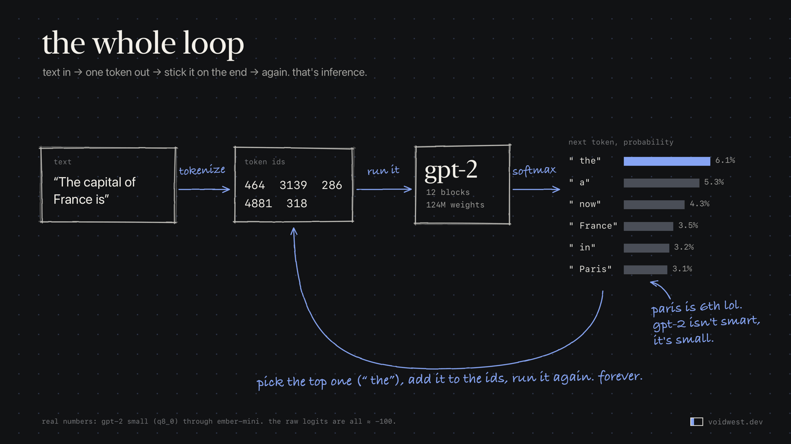
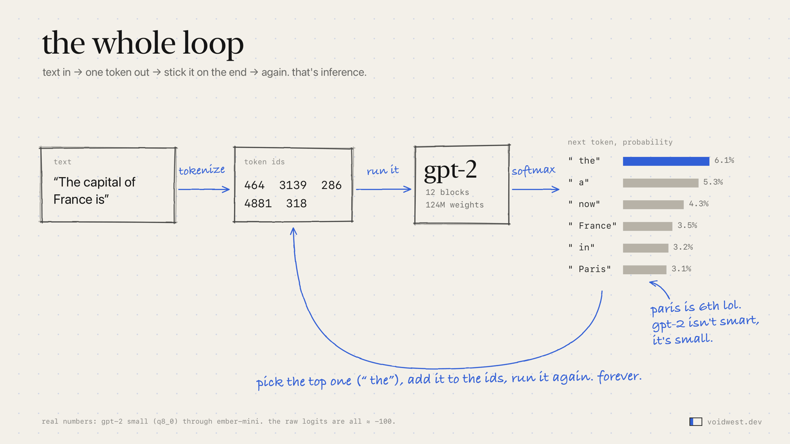
لـThe capital of France is، GPT-2 small يعطي " the" 6.1% و" Paris" 3.1% بس، يعني باريس في المركز السادس. والـgreedy decoding يختار " the" ويكتب "the capital of France, and it is the capital of France."
GPT-2 small مو ذكي، وهذا مو المقصود أصلاً. بس هو صغير لدرجة إنك تقدر تمسكه كله في راسك، وكل جزء من أي engine حديث موجود فيه أصلاً.
تقدر تقرأ عن الـtransformers قد ما تبغى، ولسه ما تحس كيف يشتغل من جوا. بس لو كتبت الـloop كله بنفسك، يصير عندك أجزاء واضحة تفككها وتتبعها خطوة خطوة. هذي أشياء ما فهمتها صح إلا بعد ما كتبته أول مرة:
ember-mini هو أول engine سويته لـGPT-2، بس مقصوص عشان أنت تركبه من جديد. يغطي الأساسيات بس، وما فيه abstractions تستخبى وراها: كل عملية دالة عادية على slices من نوع f32، والـdependencies الوحيدة هي tokenizers وhalf.
كل دالة ناقصة محافظة على نفس الـsignature. والتعليقات تقول لك إيش تحسب وإيش اللي عادةً يخرب، بس ما تقول لك كيف تكتبه.
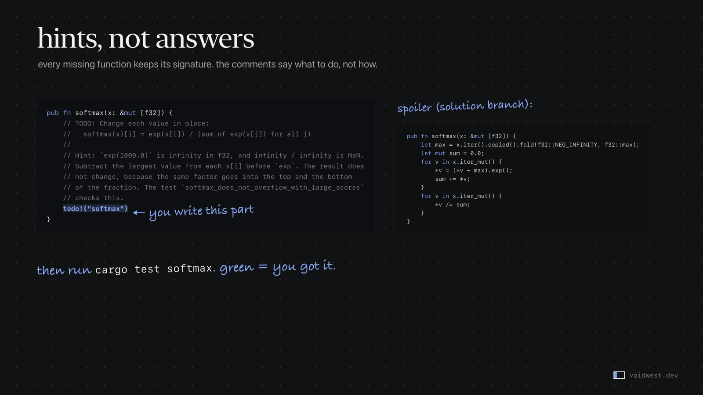
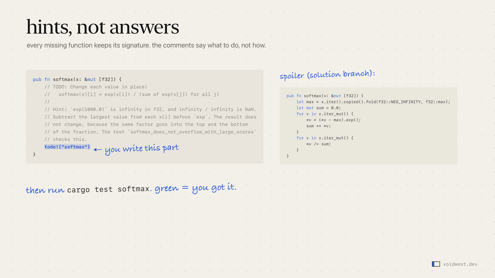
main، وجنبها الحل.فيه ست تمارين بالترتيب: الرياضيات، والبايتات لأرقام، والـKV cache، وقارئ الـGGUF، والـforward pass، وآخر شيء الـgeneration loop. وكل واحد له أمر اختبار خاص فيه.
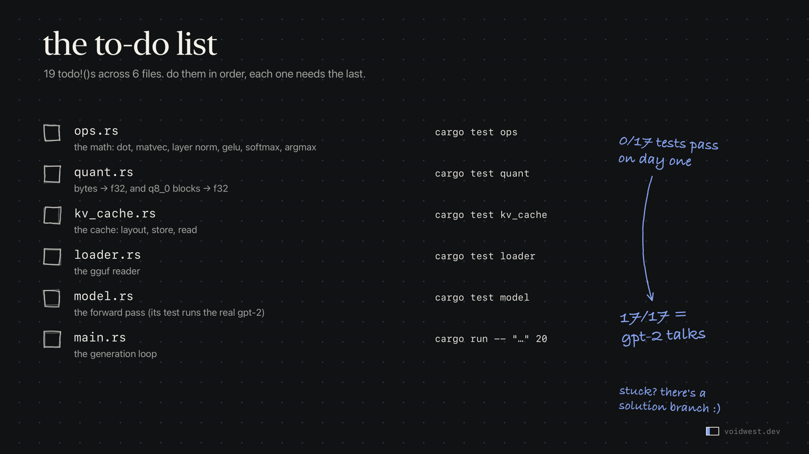
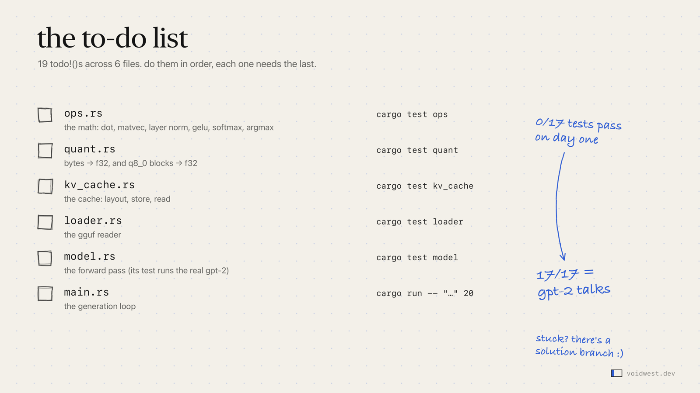
تبدأ من 0 من 17 اختبار ناجح، وتوقف لما GPT-2 يتكلم.
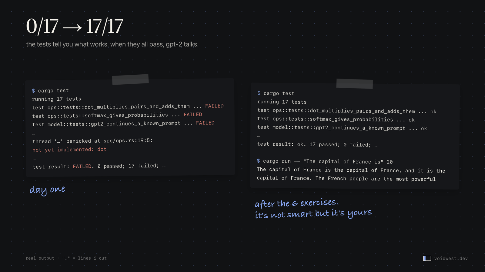
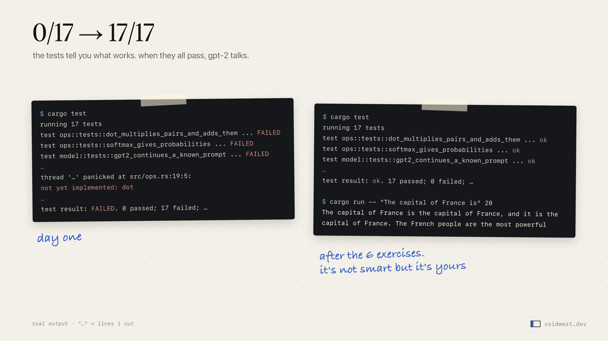
main في البداية، وفرع solution.ملف GGUF، صيغة llama.cpp، فيه أربع أجزاء: header، والـmetadata، والـtensor infos، وبعدها بيانات الـtensors. ملف GPT-2 فيه 1.7 MB من الـmetadata قبل أول وزن، لأن كل الـvocabulary اللي يستخدمه الـtokenizer ساكن هناك.
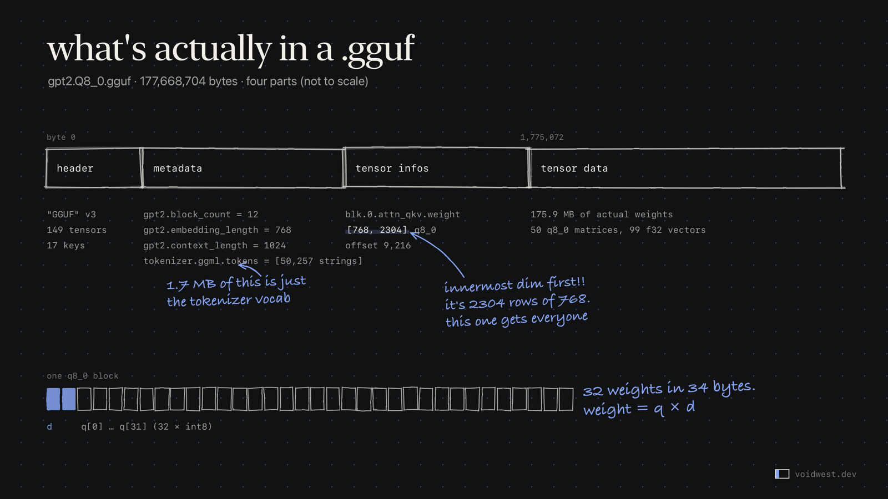
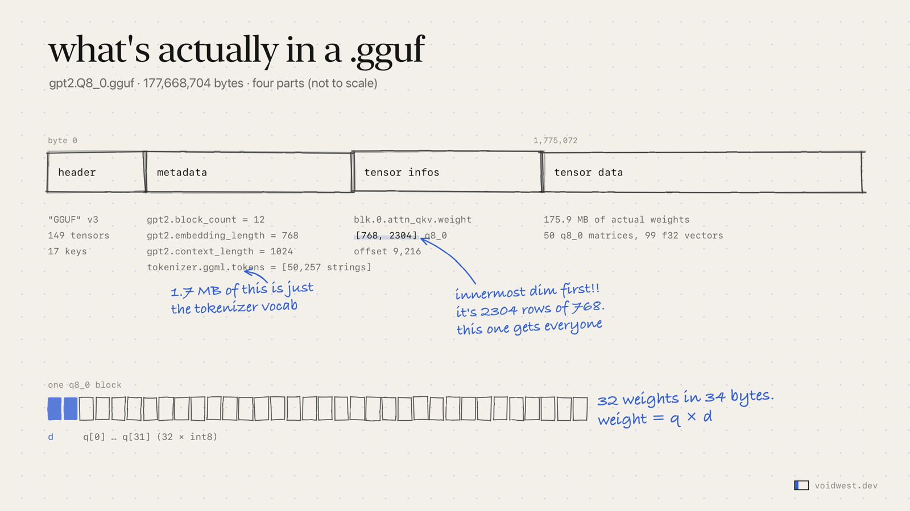
gpt2.Q8_0.gguf.أماكن ممكن تنفجر فيك:
[768, 2304]. لو نسيت تقلبها، ولا شيء يركب. وأنا سويتها أكثر من مرة.forward pass واحد: خذ صف الـtoken في الـtoken embedding، وزود عليه صف موقعه في الـposition embedding، وكذا يصير عندك 768 رقم. شغل 12 block من x = x + attention(norm(x)) وبعدها x = x + mlp(norm(x)). وفي الآخر norm أخير والـoutput layer يعطونك 50,257 logit. وفي ember-mini الـforward pass كله 51 سطر.
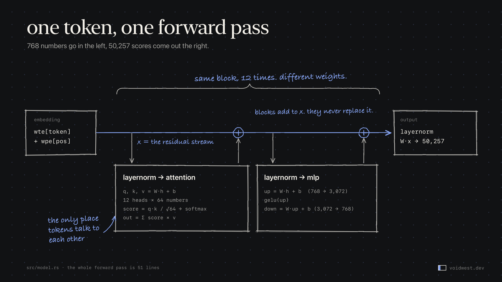
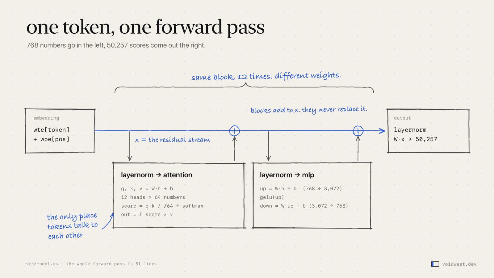
الـlogits الخام اللي يطلعها GPT-2 لهذا الـprompt كلها حوالي −100. وفي f32، exp(−100.7) يساوي 1.8e−44: رقم subnormal باقي فيه حوالي 4 بت دقة بس. وتحت −104، الـexp يرجع صفر بالضبط. يعني softmax عادي على GPT-2 خربان وهو ساكت. اطرح أكبر قيمة أول. والاتجاه الثاني يخرب كمان: exp(1000) يطلع لانهاية، ولانهاية على لانهاية تطلع NaN.
ember-mini يختار بـargmax: greedy decoding، بدون sampling وبدون temperature.
بدون cache، كل token جديد يشغل النص كله من أوله، فـ6 tokens تكلف 21 مرور. ومع KV cache، النموذج يحفظ الـkey والـvalue لكل token مرة وحدة ويرجع يقرأها بعدين، فـ6 tokens تكلف 6 مرورات بس. ولـGPT-2 small على الـcontext كامل، يعني 1,024 token، الـcache حجمه 72 MiB.
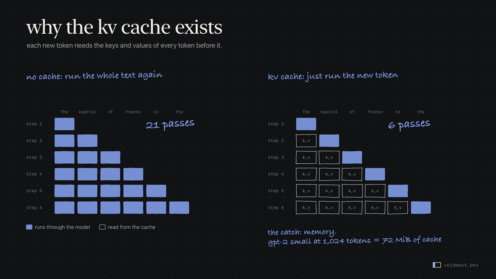
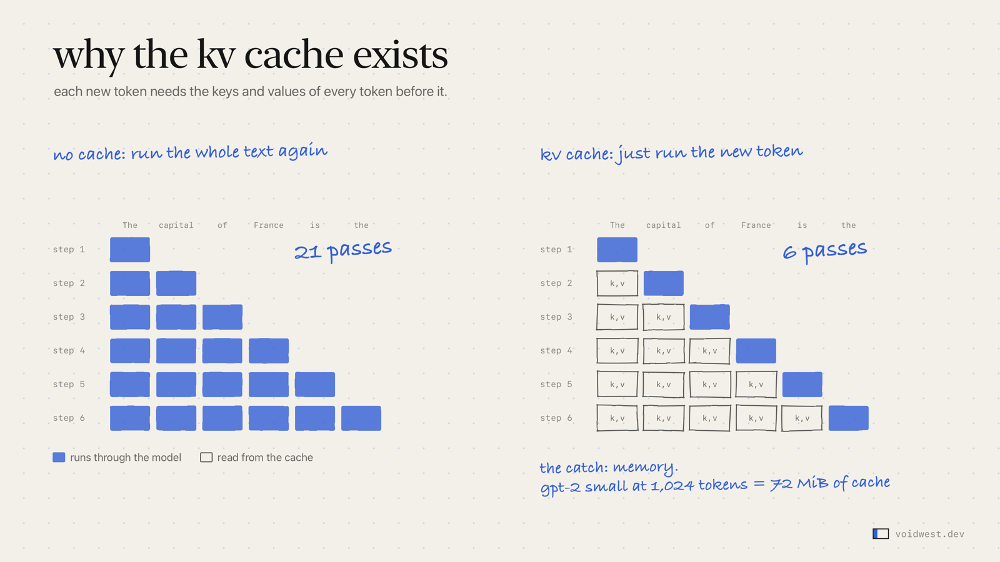
ember-mini يطلع حوالي 9 tokens في الثانية على thread واحد، لأن الـdot product فيه loop عادي بدون أي تسريع. الـengines الأسرع تصطدم بجدار ثاني: الذاكرة. الـdecode يقرأ كل وزن مرة لكل token، ويسوي عليه عمليتين ثلاث بس. Ember يشغل Llama-3.2-1B بـQ8_0 بحوالي 58 token في الثانية على الـCPU، يعني تقريباً 1.3 GB × 58 ≈ 75 GB/s من الأوزان تعدي من خلاله. وهنا السؤال ما يصير "كم سرعة الضرب عندي"، يصير "كم أقدر أنقل بايتات".
أشياء كثير خربت وأنا أبني Ember. هذي بعضها:
kernel أسرع خلى الـengine أبطأ. كتبت tile لـQ4_K بأربع أعمدة، كل تحميل activation فيه يخدم أربع أعمدة أوزان. في اختبار kernel على thread واحد كان أسرع بـ25–30%. بس في الـengine كامل على 4 threads، الـdecode نزل من 68.2 إلى 64.9 token في الثانية، فرفضته.
أكبر تحسين ما كان له دخل بالـkernel. عمليات الـmatrix-vector في الـK-quant كانت تشتغل على شجرة fork/join في Rayon، ومعاها الـefficiency cores، وفيه fork/join لكل projection. نقلتها لفريق صغير يسوي spin-wait على الـperformance cores، وبنفس الـkernel بالبت. Q4_K_M طلع من 61.4 إلى 68.2 token في الثانية على 4 threads، ومن حوالي 70 إلى حوالي 87 على 8.
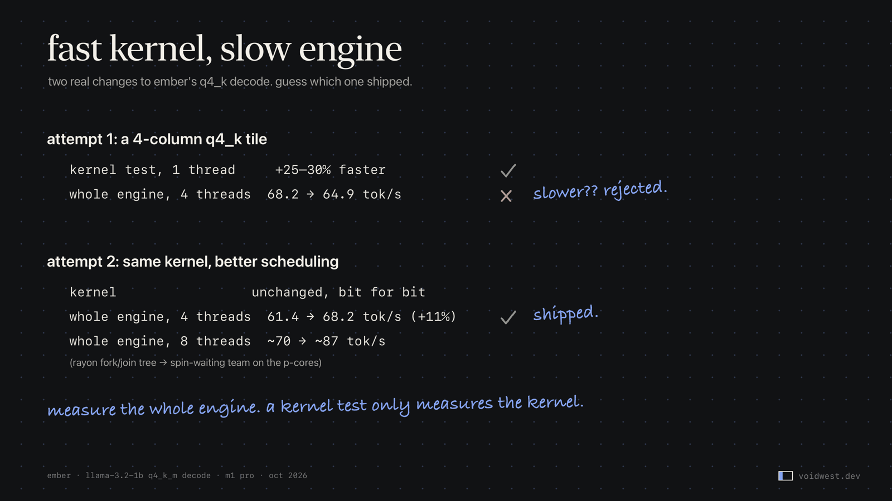
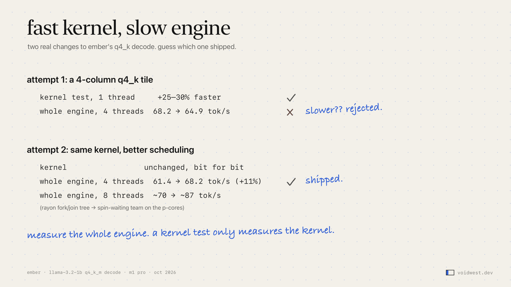
الـprefill والـdecode يبغون أشياء مختلفة. فريق الـspin-wait ممتاز للـdecode، لأنه مهام صغيرة كثيرة. ولما حطيت tiles الـprefill الكبيرة عليه، الـprefill صار أبطأ بـ15–25% على 8 threads مقارنة بالـwork stealing في Rayon.
ترتيب الأوزان في الذاكرة مو تفصيل. layout متداخل لأوزان الـMLP كان أسرع في كل اختبار لحاله. بس في الـprocess كامل خلى كل عملية أبطأ، حتى الـoutput layer اللي ما لمسها أصلاً. وما عرفت ليش حتى دحين، فما نزل.
مرجعك ممكن يكذب عليك. llama-bench يستخدم Metal افتراضياً. ومقارنتي "CPU مقابل CPU" كانت 112 مقابل 66 token في الثانية، حتى زودت -ngl 0.
واللابتوب كمان يكذب. مع الحمل العادي على الجهاز، تشغيلات الـ8 threads كانت تنزل 20–30% عشوائياً. ودحين كل مقارنة A/B تتناوب وتتكرر.
الصح والسريع مشكلتين منفصلة. Ember يوعد بإعادة تشغيل مطابقة بالبت، لأنه أداة بحث، فتغيير حرك الـsin والـcos في الـRoPE بـulp واحد انرجع، مع إن ما أحد يلاحظه في النص. وكودي لـGPT-2 في Ember يستخدم الـGELU الدقيق بـerf، وGPT-2 اتدرب على تقريب الـtanh. ember-mini يستخدم tanh، وبأوزان F32 يطابق llama.cpp token بـtoken لـ100 token على أربع prompts. ومع ملف Q8_0، llama.cpp يضغط الـactivations كمان لـ8 بت، والنص الـgreedy يبعد بعد كم token. نفس النموذج مو بالضرورة نفس الأرقام.
طيب فين وصل Ember؟ llama.cpp لسه متقدم على الـCPU. على Llama-3.2-1B وM1 Pro و4 threads بداية أكتوبر: 57.8 مقابل 65.8 token في الثانية بـQ8_0، و67.5 مقابل 88.6 بـQ4_K_M. سوي profile قبل ما تلمس أي شيء، وقيس الـengine كامل، ولا تثق في رقم قسته مرة وحدة. شوي بارانويا في القياس ما تضر.
ember-mini نموذج واحد، وصيغة وحدة، وthread واحد. الـengines الحقيقية تكبر في كل اتجاه مرة وحدة:
Ember اليوم حوالي 140,000 سطر Rust، موزعة بين src/ والـcrate اللي اسمه ember-core. مو كله inference: فيه GUI وأدوات بحث وصوت كمان. وهنا الـloop التعليمي الصغير يتحول لسطور كثير من المعاناة، بمساعدة Claude.
بناء engine يستاهل حتى لو ما نزلت واحد أبداً. يعطيك إحساس بأنظمة الـML ما تعطيك إياه الأوراق ولا الـlibraries اللي فوق: فين يروح الوقت، وفين تروح الذاكرة، وليش "نفس النموذج" ممكن يعطيك نص مختلف.
سوي clone لـember-mini، ونزل GPT-2 (الـREADME فيه الأمر والـchecksum)، وشغل cargo test ops.
لو سألت نفسك مرة إيش يصير بين ملف النموذج و"hello world"، جرب تبني النسخة الصغيرة مرة وحدة. ولو وصلت لهنا: شكراً إنك قرأت.
gpt2.Q8_0.gguf من QuantFactory/gpt2-GGUF (SHA-256 0afd77d8…)، على thread واحد في Apple M1 Pro. ومقارنة llama.cpp استخدمت نسخة F32 من نفس الأوزان سويتها بـllama-quantize --allow-requantize، مع --temp 0 و-ngl 0.